Overview
NONCANONICAL / ILLUSTRATIVE COST ONLY
- Run ID
- NONCANONICAL_CPU_CANONICAL_100_C2-20260829T020534Z
- Dataset mode
- canonical_100
- Query count
- 100
- Success count
- 100
- Failure count
- 0
- Success rate
- 100.00%
- Benchmark concurrency
- 2
- Duration
- N/A / telemetry unavailable for this run
- Model
- Qwen/Qwen3-0.6B
- Model revision
- N/A / telemetry unavailable for this run
- vLLM version
- 0.8.5
- dtype
- bfloat16
- max model length
- 4096
- max num seqs
- 32
- max batched tokens
- N/A / telemetry unavailable for this run
- GPU memory target
- N/A / telemetry unavailable for this run
- Prefix caching
- disabled
- Cost profile
- reference_cpu_demo:2026-08-28
- Machine hourly cost
- $1.000000
- Cost profile type
- synthetic/reference
Assignment Metrics
- Total run cost
- $0.375744
- Mean cost/query
- $0.003757
- Median cost/query
- $0.003052
- p95 cost/query
- $0.006657
- Queries per dollar
- 266.139
- Tokens per dollar
- 102,431.45
- Request cost sum
- $0.375744
Percentage of total cost by agent
| Agent | Share |
|---|---|
| AdvisorAgent | 45.00% |
| MetricsAgent | 14.08% |
| PriceAgent | 13.10% |
| RiskAgent | 7.81% |
| overhead_unallocated | 20.00% |
Request cost sum should match total run cost within floating-point tolerance. Failed attempts retain allocated infrastructure cost.
Cost
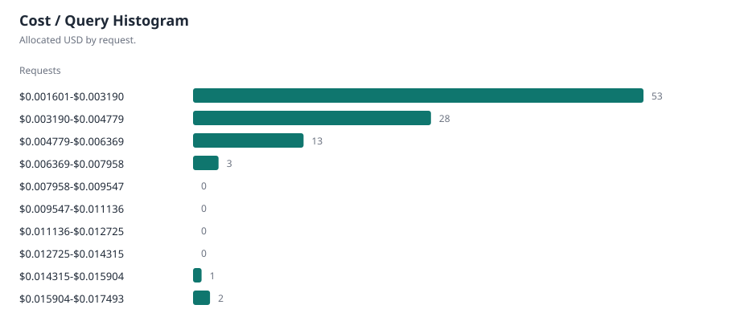
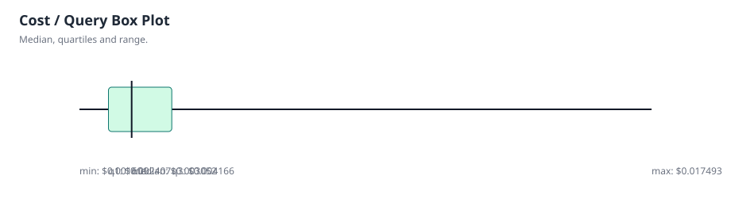
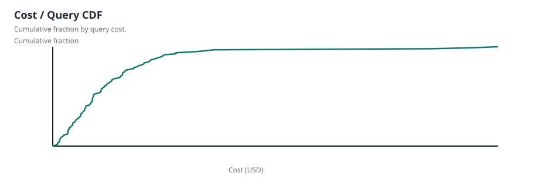
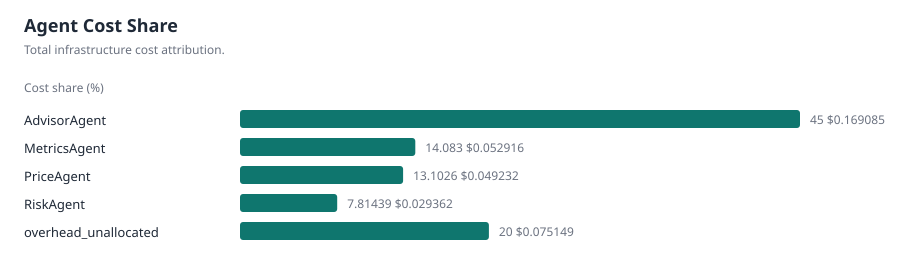
Performance
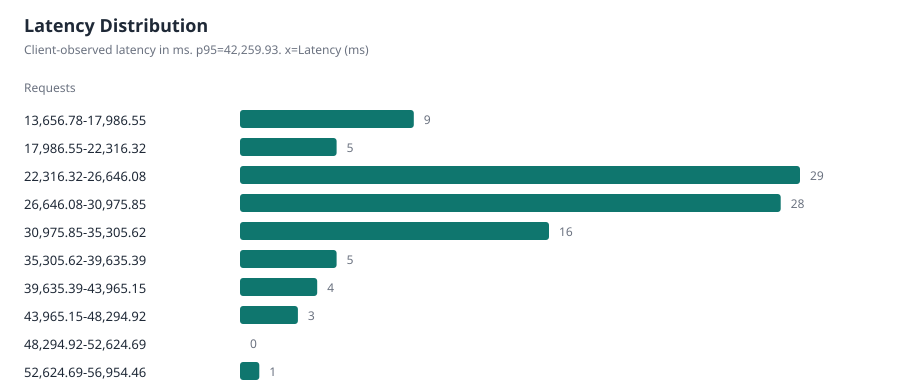
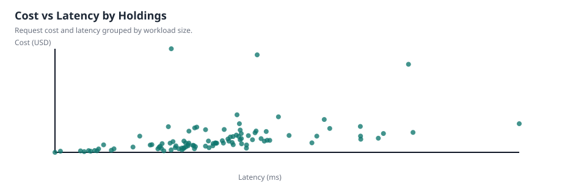
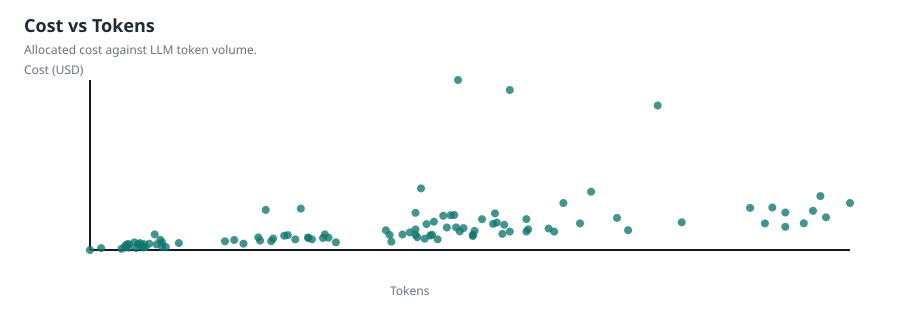
Agents & Tools
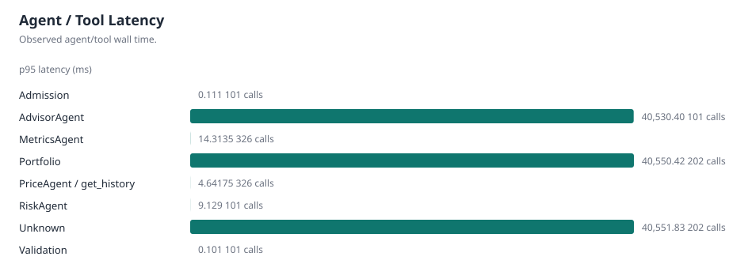
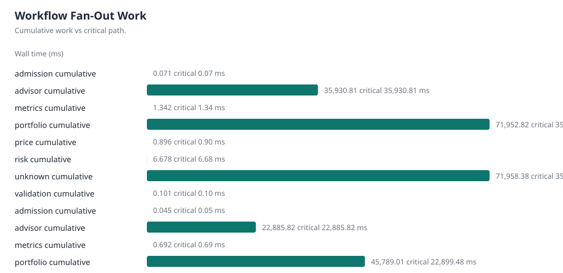
Inference & Serving
- Inference request count
- 101
- Total prompt tokens
- 26268
- Total completion tokens
- 12220
- Total tokens
- 38488
- Inference elapsed p50
- 26,398.97 ms
- Inference elapsed p95
- 40,529.38 ms
Aggregate vLLM telemetry
| Metric | Latest | Mean | Max | Source |
|---|---|---|---|---|
| Requests running | 1 requests | 1.50549 requests | 2 requests | gauge |
| Requests waiting | 0 requests | 0 requests | 0 requests | gauge |
| Prompt token throughput | 18.3409 tokens/s | 18.7291 tokens/s | 30.8274 tokens/s | rate |
| Generation token throughput | 11.3824 tokens/s | 8.64152 tokens/s | 12.5895 tokens/s | rate |
| Aggregate E2E p50 | 16,875.00 ms | 27,597.06 ms | 45,000.00 ms | run-level |
| Aggregate E2E p95 | 19,687.50 ms | 35,522.96 ms | 58,500.00 ms | run-level |
| Aggregate TTFT p50 | 3,437.50 ms | 6,695.46 ms | 15,000.00 ms | run-level |
| Aggregate TTFT p95 | 4,843.75 ms | 9,353.77 ms | 19,500.00 ms | run-level |
| Aggregate TPOT p50 | 120.794 ms | 132.676 ms | 173.165 ms | run-level |
| Aggregate TPOT p95 | 188.203 ms | 233.519 ms | 376.667 ms | run-level |
| Aggregate queue p95 | 285 ms | 285 ms | 285 ms | run-level |
| Aggregate prefill p95 | 4,875.00 ms | 9,550.50 ms | 14,750.00 ms | run-level |
| Aggregate decode p95 | 14,687.50 ms | 30,246.26 ms | 48,500.00 ms | run-level |
| KV-cache utilization | 1.37% | 3.66% | 85.47% | gauge |
| Preemptions | 0 count | 0 count | 0 count | increase |
| Prefix-cache hits | N/A / telemetry unavailable for this run | N/A / telemetry unavailable for this run | N/A / telemetry unavailable for this run | rate |
| Prefix-cache queries | N/A / telemetry unavailable for this run | N/A / telemetry unavailable for this run | N/A / telemetry unavailable for this run | rate |
GPU telemetry
| Metric | Latest | Mean | Max |
|---|---|---|---|
| GPU utilization | N/A / telemetry unavailable for this run | N/A / telemetry unavailable for this run | N/A / telemetry unavailable for this run |
| GPU memory used | N/A / telemetry unavailable for this run | N/A / telemetry unavailable for this run | N/A / telemetry unavailable for this run |
| GPU power | N/A / telemetry unavailable for this run | N/A / telemetry unavailable for this run | N/A / telemetry unavailable for this run |
| GPU temperature | N/A / telemetry unavailable for this run | N/A / telemetry unavailable for this run | N/A / telemetry unavailable for this run |
| GPU energy | N/A / telemetry unavailable for this run | N/A / telemetry unavailable for this run | N/A / telemetry unavailable for this run |
Exact per-request inference values come from inference spans. vLLM scheduler and histogram values are aggregate run-level Prometheus telemetry and are not assigned to individual requests.
Workload
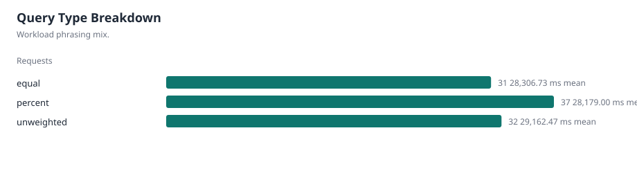
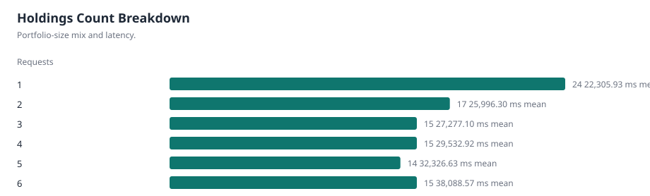
Request Drilldown
| Query ID | Request ID | Holdings | Type | Latency | Prompt tokens | Completion tokens | Cost | Success |
|---|---|---|---|---|---|---|---|---|
| 21 | NONCANONICAL_CPU_CANONICAL_100_C2-20260829T020534Z-1-4f19d12e9ca8448eac77ded6dcb014d5 | 1 | percent | 37,619.43 ms | 144 tokens | 107 tokens | $0.003056 | True |
| 17 | NONCANONICAL_CPU_CANONICAL_100_C2-20260829T020534Z-2-67ebc0f4d0d14676a769b63dfe27143f | 1 | percent | 31,511.38 ms | 142 tokens | 101 tokens | $0.002243 | True |
| 98 | NONCANONICAL_CPU_CANONICAL_100_C2-20260829T020534Z-3-a0b31dae66304a9d80d173277ebd747a | 1 | percent | 25,206.48 ms | 144 tokens | 93 tokens | $0.002151 | True |
| 123 | NONCANONICAL_CPU_CANONICAL_100_C2-20260829T020534Z-4-08fd2556f68a45efb6243b61c884a651 | 1 | percent | 27,691.54 ms | 144 tokens | 110 tokens | $0.002558 | True |
| 639 | NONCANONICAL_CPU_CANONICAL_100_C2-20260829T020534Z-5-5b91e3aede1446d5a97abf546324644b | 1 | percent | 26,662.00 ms | 144 tokens | 101 tokens | $0.002155 | True |
| 625 | NONCANONICAL_CPU_CANONICAL_100_C2-20260829T020534Z-6-0cc705e439fd4d15951455f0fe6cbb80 | 1 | equal | 23,807.53 ms | 146 tokens | 89 tokens | $0.001838 | True |
| 100 | NONCANONICAL_CPU_CANONICAL_100_C2-20260829T020534Z-7-fd12b360e09547b0a23cc0572f983b67 | 1 | equal | 25,492.79 ms | 142 tokens | 93 tokens | $0.001996 | True |
| 543 | NONCANONICAL_CPU_CANONICAL_100_C2-20260829T020534Z-8-ec43d75c55024b4fb7ac5fb5b34e7c0d | 1 | equal | 28,023.67 ms | 144 tokens | 111 tokens | $0.002315 | True |
| 82 | NONCANONICAL_CPU_CANONICAL_100_C2-20260829T020534Z-9-f6a3419aeaa8419dae44bfc6ec52ecd0 | 1 | equal | 23,253.95 ms | 142 tokens | 94 tokens | $0.002136 | True |
| 125 | NONCANONICAL_CPU_CANONICAL_100_C2-20260829T020534Z-10-37eb23d8bca543fa90ee10fa61764c5b | 1 | unweighted | 24,492.80 ms | 141 tokens | 103 tokens | $0.001974 | True |
| 621 | NONCANONICAL_CPU_CANONICAL_100_C2-20260829T020534Z-11-e60212507b4e4344bbde9b9cb781cadc | 1 | unweighted | 25,489.80 ms | 146 tokens | 118 tokens | $0.002256 | True |
| 790 | NONCANONICAL_CPU_CANONICAL_100_C2-20260829T020534Z-12-2d4ae1377f6544c8b0e340a3b426cd4b | 1 | unweighted | 25,655.23 ms | 144 tokens | 104 tokens | $0.002186 | True |
| 412 | NONCANONICAL_CPU_CANONICAL_100_C2-20260829T020534Z-13-f4c48bae43194d749784d43e6feba22f | 1 | unweighted | 25,693.86 ms | 142 tokens | 98 tokens | $0.002315 | True |
| 30 | NONCANONICAL_CPU_CANONICAL_100_C2-20260829T020534Z-14-f5020c0994e2448c86ff1f08a77103d1 | 2 | percent | 31,522.13 ms | 194 tokens | 140 tokens | $0.002734 | True |
| 7 | NONCANONICAL_CPU_CANONICAL_100_C2-20260829T020534Z-15-dbbc1f271c5b4da58740e1e77e1459b6 | 2 | percent | 30,281.38 ms | 194 tokens | 140 tokens | $0.002770 | True |
| 71 | NONCANONICAL_CPU_CANONICAL_100_C2-20260829T020534Z-16-2f3017982a24445aa29f69d98f132876 | 2 | percent | 28,619.39 ms | 192 tokens | 151 tokens | $0.003056 | True |
| 16 | NONCANONICAL_CPU_CANONICAL_100_C2-20260829T020534Z-17-75a9255ba84f42818abfffedb21fa189 | 2 | percent | 26,879.23 ms | 192 tokens | 138 tokens | $0.005470 | True |
| 12 | NONCANONICAL_CPU_CANONICAL_100_C2-20260829T020534Z-18-77d5e177ed2047938eae5745f49c8a38 | 2 | percent | 26,507.33 ms | 194 tokens | 121 tokens | $0.002672 | True |
| 24 | NONCANONICAL_CPU_CANONICAL_100_C2-20260829T020534Z-19-c40b1e9b4bba42bfafdf8c4b4050eb9c | 2 | equal | 23,584.01 ms | 189 tokens | 110 tokens | $0.002187 | True |
| 6 | NONCANONICAL_CPU_CANONICAL_100_C2-20260829T020534Z-20-60e42045bb134547ac975b1fb4d595ee | 2 | equal | 24,935.83 ms | 188 tokens | 139 tokens | $0.002597 | True |
| 32 | NONCANONICAL_CPU_CANONICAL_100_C2-20260829T020534Z-21-7260a65842c44b2fbef63f61c06d4dd0 | 2 | equal | 20,931.98 ms | 190 tokens | 99 tokens | $0.002416 | True |
| 89 | NONCANONICAL_CPU_CANONICAL_100_C2-20260829T020534Z-22-37ded1384df84564a4f05b3d1dda667a | 2 | equal | 22,692.47 ms | 188 tokens | 119 tokens | $0.002776 | True |
| 722 | NONCANONICAL_CPU_CANONICAL_100_C2-20260829T020534Z-23-a0d70a3d0aa8493a95c9d8c64e2bc9f7 | 2 | equal | 23,649.26 ms | 186 tokens | 135 tokens | $0.002937 | True |
| 15 | NONCANONICAL_CPU_CANONICAL_100_C2-20260829T020534Z-24-6f26a42c9c5a4c278dad3393aa5c5e3a | 2 | unweighted | 25,856.51 ms | 192 tokens | 122 tokens | $0.002427 | True |
| 247 | NONCANONICAL_CPU_CANONICAL_100_C2-20260829T020534Z-25-fd4d179452044577bf9929c4e76649ae | 2 | unweighted | 26,755.40 ms | 188 tokens | 120 tokens | $0.002480 | True |
| 175 | NONCANONICAL_CPU_CANONICAL_100_C2-20260829T020534Z-26-c53daaf6e384450ba315e43e330b9c26 | 2 | unweighted | 23,469.40 ms | 191 tokens | 103 tokens | $0.002532 | True |
| 14 | NONCANONICAL_CPU_CANONICAL_100_C2-20260829T020534Z-27-90f803f825a148118f5fe3dad3cab1c3 | 2 | unweighted | 26,684.75 ms | 188 tokens | 123 tokens | $0.005354 | True |
| 974 | NONCANONICAL_CPU_CANONICAL_100_C2-20260829T020534Z-28-17b7ab76351348bcbf328270b5800cfe | 2 | unweighted | 28,651.67 ms | 189 tokens | 134 tokens | $0.002998 | True |
| 8 | NONCANONICAL_CPU_CANONICAL_100_C2-20260829T020534Z-29-8414e4b0b1744df4b388a0d284c3a465 | 3 | percent | 24,872.87 ms | 243 tokens | 106 tokens | $0.002319 | True |
| 23 | NONCANONICAL_CPU_CANONICAL_100_C2-20260829T020534Z-30-c8f37f4f75e54f33bd8d8b4db2943a80 | 3 | percent | 33,689.02 ms | 238 tokens | 138 tokens | $0.003445 | True |
| 52 | NONCANONICAL_CPU_CANONICAL_100_C2-20260829T020534Z-31-d8ffa5e56f1549df81a11866a853faa4 | 3 | percent | 18,192.41 ms | 241 tokens | 104 tokens | $0.002750 | True |
| 3 | NONCANONICAL_CPU_CANONICAL_100_C2-20260829T020534Z-32-e904416d2d8f4da68d03780d388496ea | 3 | percent | 30,631.80 ms | 244 tokens | 151 tokens | $0.007359 | True |
| 51 | NONCANONICAL_CPU_CANONICAL_100_C2-20260829T020534Z-33-d7a12d7d17724560a7fb889d8e231894 | 3 | percent | 30,927.08 ms | 240 tokens | 152 tokens | $0.003524 | True |
| 40 | NONCANONICAL_CPU_CANONICAL_100_C2-20260829T020534Z-34-609c9b32293b409082eb01088f3e0a8f | 3 | equal | 23,365.85 ms | 282 tokens | 97 tokens | $0.002379 | True |
| 57 | NONCANONICAL_CPU_CANONICAL_100_C2-20260829T020534Z-35-fa6b235d6f6b43f79b8c18303285e835 | 3 | equal | 26,065.06 ms | 281 tokens | 112 tokens | $0.002796 | True |
| 369 | NONCANONICAL_CPU_CANONICAL_100_C2-20260829T020534Z-36-06aedc3eb64d4568b448c03b1371b6aa | 3 | equal | 25,843.00 ms | 280 tokens | 105 tokens | $0.003048 | True |
| 103 | NONCANONICAL_CPU_CANONICAL_100_C2-20260829T020534Z-37-b29e56a3a8654605a3e06fd11df76753 | 3 | equal | 30,930.89 ms | 280 tokens | 155 tokens | $0.005023 | True |
| 425 | NONCANONICAL_CPU_CANONICAL_100_C2-20260829T020534Z-38-801aa3d4f2e7463087c6514dc3a686ee | 3 | equal | 24,396.50 ms | 277 tokens | 101 tokens | $0.003013 | True |
| 28 | NONCANONICAL_CPU_CANONICAL_100_C2-20260829T020534Z-39-4c8c01c0e5a74ffc8a1f94abc685fec1 | 3 | unweighted | 26,066.70 ms | 278 tokens | 126 tokens | $0.002600 | True |
| 75 | NONCANONICAL_CPU_CANONICAL_100_C2-20260829T020534Z-40-4a5d3d058b424c119108a3302c7eae86 | 3 | unweighted | 26,150.82 ms | 280 tokens | 131 tokens | $0.004851 | True |
| 251 | NONCANONICAL_CPU_CANONICAL_100_C2-20260829T020534Z-41-faa86eadd1fe486d9c9cd53df6017539 | 3 | unweighted | 29,263.05 ms | 282 tokens | 142 tokens | $0.003391 | True |
| 67 | NONCANONICAL_CPU_CANONICAL_100_C2-20260829T020534Z-42-b92cc2e11f26456e99f128de7d2209d9 | 3 | unweighted | 30,791.05 ms | 281 tokens | 153 tokens | $0.004038 | True |
| 161 | NONCANONICAL_CPU_CANONICAL_100_C2-20260829T020534Z-43-34f96091418e4ac9b4577686e83ea70f | 3 | unweighted | 27,970.43 ms | 279 tokens | 137 tokens | $0.003344 | True |
| 2 | NONCANONICAL_CPU_CANONICAL_100_C2-20260829T020534Z-44-c43fb3f06a4a4e2dbc05060576494333 | 4 | percent | 28,743.52 ms | 283 tokens | 140 tokens | $0.003011 | True |
| 43 | NONCANONICAL_CPU_CANONICAL_100_C2-20260829T020534Z-45-220cf4e16a5c4b86bd5eb44c6bdbcf49 | 4 | percent | 26,138.36 ms | 284 tokens | 117 tokens | $0.003023 | True |
| 5 | NONCANONICAL_CPU_CANONICAL_100_C2-20260829T020534Z-46-1d43191486b4404896b1347956e20548 | 4 | percent | 29,788.44 ms | 285 tokens | 133 tokens | $0.003651 | True |
| 1 | NONCANONICAL_CPU_CANONICAL_100_C2-20260829T020534Z-47-094d70a49bd345d28c26d8a190b1b506 | 4 | percent | 32,410.31 ms | 285 tokens | 128 tokens | $0.004872 | True |
| 13 | NONCANONICAL_CPU_CANONICAL_100_C2-20260829T020534Z-48-b574641e0577445cb0399d9d3af46aaf | 4 | percent | 31,040.55 ms | 283 tokens | 131 tokens | $0.003713 | True |
| 92 | NONCANONICAL_CPU_CANONICAL_100_C2-20260829T020534Z-49-ccba7514acae489d927082c96eba95f8 | 4 | equal | 26,590.75 ms | 285 tokens | 112 tokens | $0.002657 | True |
| 78 | NONCANONICAL_CPU_CANONICAL_100_C2-20260829T020534Z-50-35d416e82020426fb593952403b152d5 | 4 | equal | 28,414.11 ms | 285 tokens | 115 tokens | $0.002960 | True |
| 37 | NONCANONICAL_CPU_CANONICAL_100_C2-20260829T020534Z-51-ffa4b9dbf6d74e6285b20519c107edee | 4 | equal | 30,265.14 ms | 280 tokens | 118 tokens | $0.004023 | True |
| 31 | NONCANONICAL_CPU_CANONICAL_100_C2-20260829T020534Z-52-9977df452e944e568db9d47fbe3feb72 | 4 | equal | 27,702.48 ms | 282 tokens | 110 tokens | $0.005076 | True |
| 195 | NONCANONICAL_CPU_CANONICAL_100_C2-20260829T020534Z-53-381aef3e48234810b2e9f7440435de13 | 4 | equal | 24,666.23 ms | 285 tokens | 104 tokens | $0.003249 | True |
| 277 | NONCANONICAL_CPU_CANONICAL_100_C2-20260829T020534Z-54-179d636de00a4d78b0d346737086c867 | 4 | unweighted | 31,062.63 ms | 284 tokens | 139 tokens | $0.002912 | True |
| 312 | NONCANONICAL_CPU_CANONICAL_100_C2-20260829T020534Z-55-45f2ef3fb4174c81915bdea75b3810ec | 4 | unweighted | 29,365.84 ms | 276 tokens | 116 tokens | $0.003023 | True |
| 80 | NONCANONICAL_CPU_CANONICAL_100_C2-20260829T020534Z-56-2c0351e000504201aa61452519832f8d | 4 | unweighted | 32,878.88 ms | 279 tokens | 130 tokens | $0.003706 | True |
| 63 | NONCANONICAL_CPU_CANONICAL_100_C2-20260829T020534Z-57-84d9ed5739ea4a73a2f2108c7a92f225 | 4 | unweighted | 33,357.41 ms | 281 tokens | 126 tokens | $0.004795 | True |
| 133 | NONCANONICAL_CPU_CANONICAL_100_C2-20260829T020534Z-58-b0d009d429d9411b8002d9bc3d9f7c2f | 4 | unweighted | 30,569.16 ms | 282 tokens | 120 tokens | $0.004245 | True |
| 39 | NONCANONICAL_CPU_CANONICAL_100_C2-20260829T020534Z-59-4047d33d2a0f48f6a874d10b41845621 | 5 | percent | 33,180.12 ms | 329 tokens | 138 tokens | $0.003321 | True |
| 84 | NONCANONICAL_CPU_CANONICAL_100_C2-20260829T020534Z-60-b035bdf46d194e669f72f82625ca0dbb | 5 | percent | 32,076.20 ms | 327 tokens | 126 tokens | $0.003538 | True |
| 90 | NONCANONICAL_CPU_CANONICAL_100_C2-20260829T020534Z-61-9f648f7ffd234fe686b720fff6e7a3cb | 5 | percent | 30,010.86 ms | 328 tokens | 112 tokens | $0.003960 | True |
| 33 | NONCANONICAL_CPU_CANONICAL_100_C2-20260829T020534Z-62-40287c1043f143f696ce4aef43028587 | 5 | percent | 34,496.32 ms | 325 tokens | 162 tokens | $0.007048 | True |
| 4 | NONCANONICAL_CPU_CANONICAL_100_C2-20260829T020534Z-63-bc39d3b7d86a4a5a81c2637b12f5365c | 5 | percent | 30,854.85 ms | 330 tokens | 142 tokens | $0.005997 | True |
| 77 | NONCANONICAL_CPU_CANONICAL_100_C2-20260829T020534Z-64-2fffe4f4301c428bb2842c82b60e1c26 | 5 | equal | 42,178.24 ms | 323 tokens | 141 tokens | $0.003610 | True |
| 314 | NONCANONICAL_CPU_CANONICAL_100_C2-20260829T020534Z-65-a96b4404415745ae931ceaaeaf0632e5 | 5 | equal | 25,684.46 ms | 324 tokens | 128 tokens | $0.003334 | True |
| 216 | NONCANONICAL_CPU_CANONICAL_100_C2-20260829T020534Z-66-5f40926e9f9c43a7b0919bc5b8890115 | 5 | equal | 31,692.76 ms | 323 tokens | 113 tokens | $0.004159 | True |
| 83 | NONCANONICAL_CPU_CANONICAL_100_C2-20260829T020534Z-67-f3de7d8c26234e11a8e5f5be120d72f1 | 5 | equal | 32,515.53 ms | 326 tokens | 117 tokens | $0.016559 | True |
| 114 | NONCANONICAL_CPU_CANONICAL_100_C2-20260829T020534Z-68-5f32cfb5d6e14a0090949e79490994fa | 5 | unweighted | 30,181.92 ms | 324 tokens | 115 tokens | $0.003104 | True |
| 162 | NONCANONICAL_CPU_CANONICAL_100_C2-20260829T020534Z-69-9af2c797436042f59bc0a2373b6d3435 | 5 | unweighted | 29,876.87 ms | 322 tokens | 121 tokens | $0.003317 | True |
| 603 | NONCANONICAL_CPU_CANONICAL_100_C2-20260829T020534Z-70-0426812dba1a46e9b959c47da936f513 | 5 | unweighted | 44,291.96 ms | 326 tokens | 126 tokens | $0.004489 | True |
| 95 | NONCANONICAL_CPU_CANONICAL_100_C2-20260829T020534Z-71-7b725d9b468d41569ab7321ff7bfa606 | 5 | unweighted | 24,506.47 ms | 316 tokens | 99 tokens | $0.017493 | True |
| 311 | NONCANONICAL_CPU_CANONICAL_100_C2-20260829T020534Z-72-fdc523b4f0754c9696cc747423a623f8 | 5 | unweighted | 31,026.28 ms | 320 tokens | 108 tokens | $0.004477 | True |
| 120 | NONCANONICAL_CPU_CANONICAL_100_C2-20260829T020534Z-73-05214fd5ed1247019dc356f45ff0c085 | 6 | percent | 33,446.37 ms | 373 tokens | 134 tokens | $0.003449 | True |
| 413 | NONCANONICAL_CPU_CANONICAL_100_C2-20260829T020534Z-74-3f3f32532cb14c2ca6f7c74b107f65f0 | 6 | percent | 35,490.28 ms | 375 tokens | 161 tokens | $0.004188 | True |
| 76 | NONCANONICAL_CPU_CANONICAL_100_C2-20260829T020534Z-75-c64a63d5bad54ed98d51dd2dbf1b593a | 6 | percent | 32,313.40 ms | 373 tokens | 128 tokens | $0.004604 | True |
| 131 | NONCANONICAL_CPU_CANONICAL_100_C2-20260829T020534Z-76-37565cbb1d44469c8046da3b7a247bd0 | 6 | percent | 46,627.04 ms | 378 tokens | 145 tokens | $0.015107 | True |
| 116 | NONCANONICAL_CPU_CANONICAL_100_C2-20260829T020534Z-77-8d7afecf7f70408fbc008212973e0264 | 6 | percent | 21,565.24 ms | 377 tokens | 104 tokens | $0.004091 | True |
| 66 | NONCANONICAL_CPU_CANONICAL_100_C2-20260829T020534Z-78-7ef2608fb57a471db1a2021942d1ee5b | 6 | equal | 42,153.56 ms | 463 tokens | 139 tokens | $0.004096 | True |
| 654 | NONCANONICAL_CPU_CANONICAL_100_C2-20260829T020534Z-79-1c44933597c44e22aeacf35f3c971808 | 6 | equal | 47,046.11 ms | 467 tokens | 147 tokens | $0.004655 | True |
| 134 | NONCANONICAL_CPU_CANONICAL_100_C2-20260829T020534Z-80-7d5385cd8ee546a78b470abfd232f90a | 6 | equal | 56,954.46 ms | 469 tokens | 158 tokens | $0.005995 | True |
| 49 | NONCANONICAL_CPU_CANONICAL_100_C2-20260829T020534Z-81-3a7bb60459c04b8b91848ccfa771cc82 | 6 | equal | 24,229.35 ms | 465 tokens | 108 tokens | $0.005537 | True |
| 308 | NONCANONICAL_CPU_CANONICAL_100_C2-20260829T020534Z-82-4f50f23228ef45bdb716f93959cb5b94 | 6 | equal | 42,133.75 ms | 467 tokens | 118 tokens | $0.005575 | True |
| 10 | NONCANONICAL_CPU_CANONICAL_100_C2-20260829T020534Z-83-aff7470ebae44a01b0101f8c615f0eed | 6 | unweighted | 43,812.05 ms | 464 tokens | 128 tokens | $0.003773 | True |
| 42 | NONCANONICAL_CPU_CANONICAL_100_C2-20260829T020534Z-84-aa6dc7c0602748a1b26ed8d14cb8c67b | 6 | unweighted | 38,071.73 ms | 469 tokens | 112 tokens | $0.004087 | True |
| 188 | NONCANONICAL_CPU_CANONICAL_100_C2-20260829T020534Z-85-ca2480fa819a4869bda46400b13d651b | 6 | unweighted | 39,279.44 ms | 460 tokens | 147 tokens | $0.005263 | True |
| 154 | NONCANONICAL_CPU_CANONICAL_100_C2-20260829T020534Z-86-00ee76955ded4fa39ba5c20efa2b8dc1 | 6 | unweighted | 38,767.62 ms | 460 tokens | 151 tokens | $0.006636 | True |
| 9 | NONCANONICAL_CPU_CANONICAL_100_C2-20260829T020534Z-87-9382bf9090ac442fb66d81568e210229 | 6 | unweighted | 29,438.22 ms | 466 tokens | 126 tokens | $0.005109 | True |
| 22 | NONCANONICAL_CPU_CANONICAL_100_C2-20260829T020534Z-88-f81014672e0e4385a4d1ef9067e09eeb | 1 | percent | 18,916.79 ms | 144 tokens | 111 tokens | $0.001918 | True |
| 26 | NONCANONICAL_CPU_CANONICAL_100_C2-20260829T020534Z-89-f317d9d268344219a758f90142f13a91 | 1 | percent | 16,378.62 ms | 140 tokens | 93 tokens | $0.001709 | True |
| 187 | NONCANONICAL_CPU_CANONICAL_100_C2-20260829T020534Z-90-d899fe8bcb824c55ae0258585a61a8e7 | 1 | percent | 16,037.16 ms | 144 tokens | 93 tokens | $0.001830 | True |
| 193 | NONCANONICAL_CPU_CANONICAL_100_C2-20260829T020534Z-91-b69c7c014ea440f6a83543e06a746ac3 | 1 | percent | 17,722.14 ms | 140 tokens | 112 tokens | $0.002125 | True |
| 761 | NONCANONICAL_CPU_CANONICAL_100_C2-20260829T020534Z-92-f8953e8e5cce44c39595053533b22829 | 1 | percent | 13,656.78 ms | 140 tokens | 76 tokens | $0.001601 | True |
| 869 | NONCANONICAL_CPU_CANONICAL_100_C2-20260829T020534Z-93-506712ed5e6c49a89a09cb1fdae61ef8 | 1 | equal | 17,355.21 ms | 146 tokens | 111 tokens | $0.001884 | True |
| 179 | NONCANONICAL_CPU_CANONICAL_100_C2-20260829T020534Z-94-c998362f6a8f4b07bb497b2f4b8df5e3 | 1 | equal | 16,790.54 ms | 140 tokens | 106 tokens | $0.001863 | True |
| 117 | NONCANONICAL_CPU_CANONICAL_100_C2-20260829T020534Z-95-d3d88b45f5ee437aa47fcf6b35136fae | 1 | equal | 14,163.28 ms | 144 tokens | 78 tokens | $0.001775 | True |
| 234 | NONCANONICAL_CPU_CANONICAL_100_C2-20260829T020534Z-96-68bc4cdabf78450297470291b829b778 | 1 | unweighted | 16,977.74 ms | 144 tokens | 97 tokens | $0.001774 | True |
| 747 | NONCANONICAL_CPU_CANONICAL_100_C2-20260829T020534Z-97-6ab78ff401f44ae885f1a0888bd5719f | 1 | unweighted | 17,582.08 ms | 144 tokens | 101 tokens | $0.001846 | True |
| 477 | NONCANONICAL_CPU_CANONICAL_100_C2-20260829T020534Z-98-6d955c08c7274f8bb571113784d9a13b | 1 | unweighted | 19,161.44 ms | 144 tokens | 98 tokens | $0.002146 | True |
| 55 | NONCANONICAL_CPU_CANONICAL_100_C2-20260829T020534Z-99-09f3dfa0d0b94bc49fced30fe4dad62a | 2 | percent | 28,379.48 ms | 191 tokens | 145 tokens | $0.002600 | True |
| 54 | NONCANONICAL_CPU_CANONICAL_100_C2-20260829T020534Z-100-c72f467e373642e597bcd26f572cc5f4 | 2 | percent | 22,536.85 ms | 193 tokens | 149 tokens | $0.002719 | True |
Execution timeline for NONCANONICAL_CPU_CANONICAL_100_C2-20260829T020534Z-1-4f19d12e9ca8448eac77ded6dcb014d5
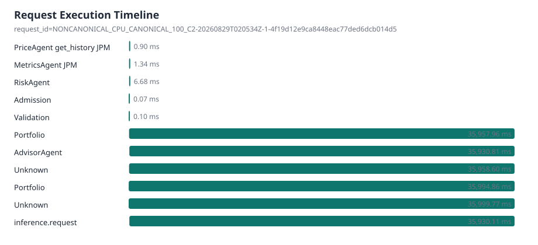
| Observation | Stage | Agent | Tool | Ticker | Wall time | Parent observation |
|---|---|---|---|---|---|---|
| otel:29bf70e5f764d2dd2e972930b89a37a1:ab5e27d78d63bbef | price | PriceAgent | get_history | JPM | 0.90 ms | otel:29bf70e5f764d2dd2e972930b89a37a1:694d5277a8f899bc |
| otel:29bf70e5f764d2dd2e972930b89a37a1:694d5277a8f899bc | metrics | MetricsAgent | JPM | 1.34 ms | otel:29bf70e5f764d2dd2e972930b89a37a1:a22d9102819621e9 | |
| otel:29bf70e5f764d2dd2e972930b89a37a1:fac1503b412b2159 | risk | RiskAgent | 6.68 ms | otel:29bf70e5f764d2dd2e972930b89a37a1:a22d9102819621e9 | ||
| otel:29bf70e5f764d2dd2e972930b89a37a1:7ad188915f3a2271 | admission | Admission | 0.07 ms | otel:29bf70e5f764d2dd2e972930b89a37a1:b3a3c6c7cd0f2aa4 | ||
| otel:29bf70e5f764d2dd2e972930b89a37a1:b15e89fdd8a52312 | validation | Validation | 0.10 ms | otel:29bf70e5f764d2dd2e972930b89a37a1:b3a3c6c7cd0f2aa4 | ||
| otel:29bf70e5f764d2dd2e972930b89a37a1:a22d9102819621e9 | portfolio | Portfolio | 35,957.96 ms | otel:29bf70e5f764d2dd2e972930b89a37a1:b0f263f3628d7fde | ||
| otel:29bf70e5f764d2dd2e972930b89a37a1:33cf4c64df48fadb | advisor | AdvisorAgent | 35,930.81 ms | otel:29bf70e5f764d2dd2e972930b89a37a1:a22d9102819621e9 | ||
| otel:29bf70e5f764d2dd2e972930b89a37a1:b0f263f3628d7fde | unknown | Unknown | 35,958.60 ms | otel:29bf70e5f764d2dd2e972930b89a37a1:b3a3c6c7cd0f2aa4 | ||
| otel:29bf70e5f764d2dd2e972930b89a37a1:46ffa764eec13038 | portfolio | Portfolio | 35,994.86 ms | otel:29bf70e5f764d2dd2e972930b89a37a1:b3a3c6c7cd0f2aa4 | ||
| otel:29bf70e5f764d2dd2e972930b89a37a1:b3a3c6c7cd0f2aa4 | unknown | Unknown | 35,999.77 ms |
Provenance
- Git SHA
- N/A / telemetry unavailable for this run
- Model
- Qwen/Qwen3-0.6B
- Model revision
- N/A / telemetry unavailable for this run
- vLLM version
- 0.8.5
- dtype
- bfloat16
- max model length
- 4096
- max num seqs
- 32
- max batched tokens
- N/A / telemetry unavailable for this run
- Prefix caching
- disabled
- Benchmark concurrency
- 2
- Dataset mode
- canonical_100
- Selected query count
- 100
- Hardware
- {"cpu_count": 14, "gpu": {"driver_supported_cuda_version": null, "driver_version": null, "memory_total_mb": null, "name": null, "toolkit_cuda_version": null}, "hostname": "9031a25bbaf6", "machine": "x86_64", "platform": "Linux-5.15.153.1-mi
{kind=link}
{kind=link}
{kind=link}
{kind=link}
{kind=link}
{kind=link}
{kind=link}
{kind=link}
{kind=link}
{kind=link}
{kind=link}
{kind=link}